Installing on Windows
Installing RAMADDA involves the installation of these three software packages:
- IDV
- Apache Tomcat
- RAMADDA
We will now go through each of steps in detail.
IDV Installation
- Install the latest version of the IDV
Tomcat Installation
- Download the Windows Service Installer of the Apache Tomcat core module to your Desktop.
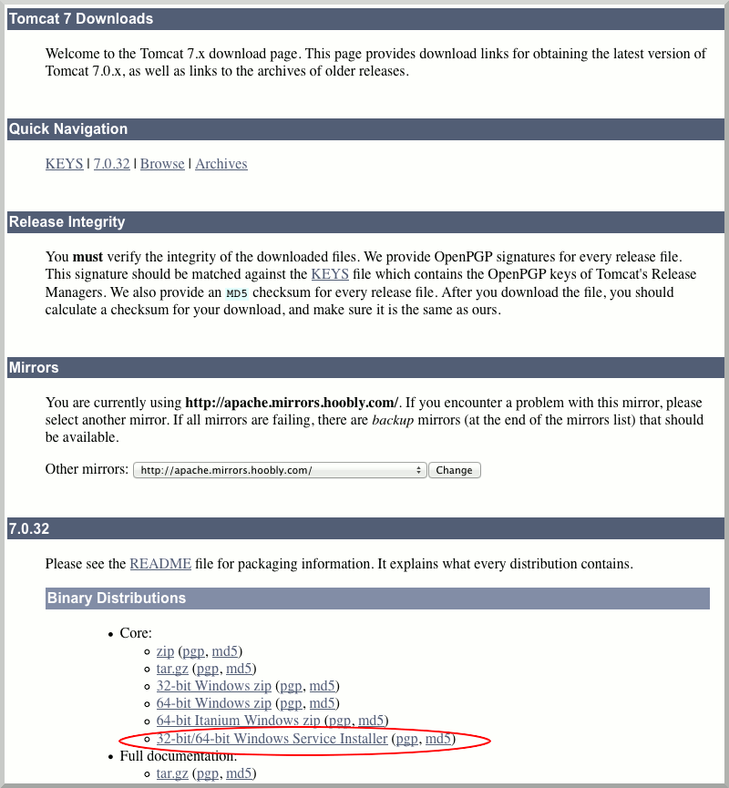
- Double click on the apache-tomcat-x.y.z icon. (x.y.z stands for the particular version of Apache Tomcat you downloaded)
- Allow the Tomcat installer to run on your computer.
- Click Next
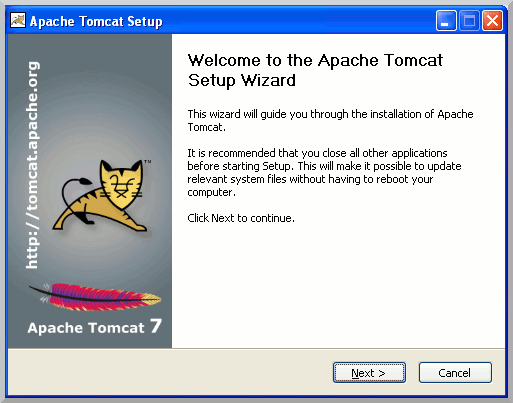
- Accept License Agreement
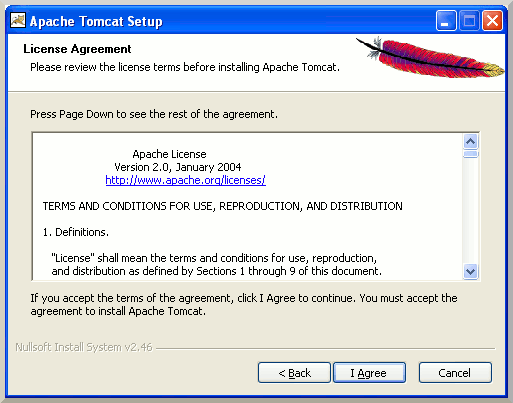
- Accept the default components. Click Next
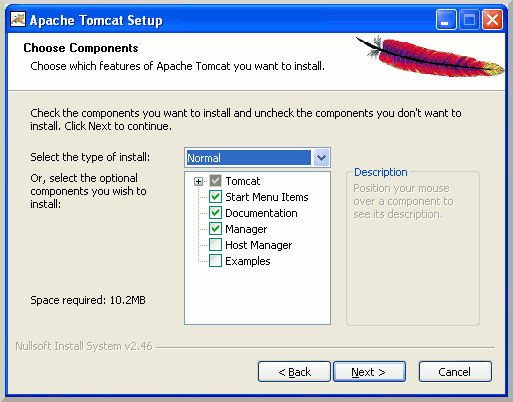
- Accept default configuration options. Click Next
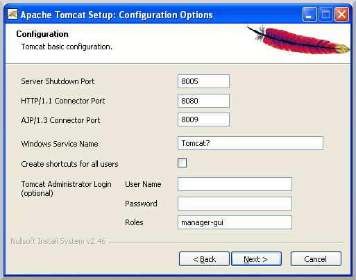
- Choose the Java Virtual Machine in the IDV directory
(e.g. C:\\Program Files\\IDV_3.0\\jre)
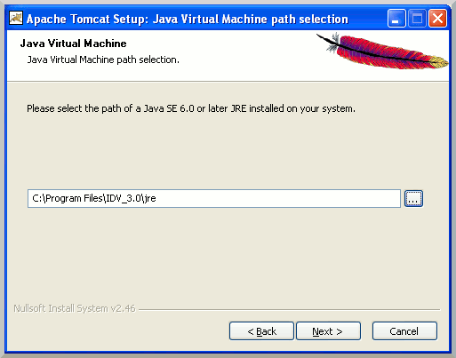
- Accept default installation location. Click Install
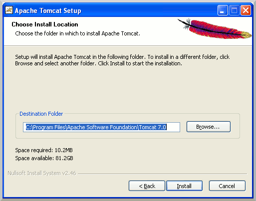
- Unclick "Run Apache Tomcat" and "Show Readme", and Finish.
- Open Windows Explorer and go to
C:\\Program Files\\Apache Software Foundation
- Right click on Tomcat 7.0 folder and select "Properties", "Security" tab, select "Users", click "Edit"
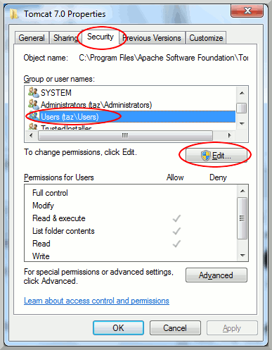
- Select "Users", check "Full control", click OK, click OK again
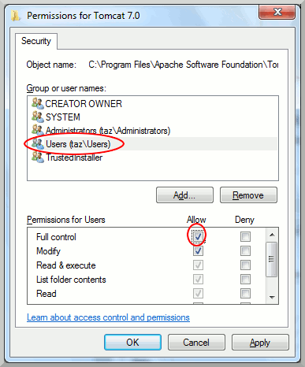
RAMADDA Installation
- Download the RAMADDA WAR (web application archive) file.
- Save the RAMADDA WAR file to
C:\\Program Files\\Apache Software Foundation\\Tomcat7.0\\webapps
- Start your Windows Task Manager(CTRL+ALT+DELETE, and then click Task Manager).
- Select the "Services" tab, and click on the "Services" button.
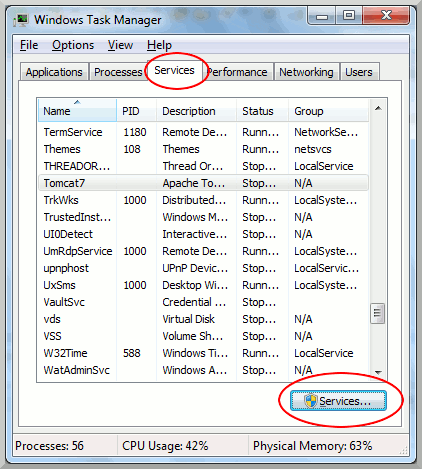
- Select the "Apache Tomcat 7", right click and select "Properties".
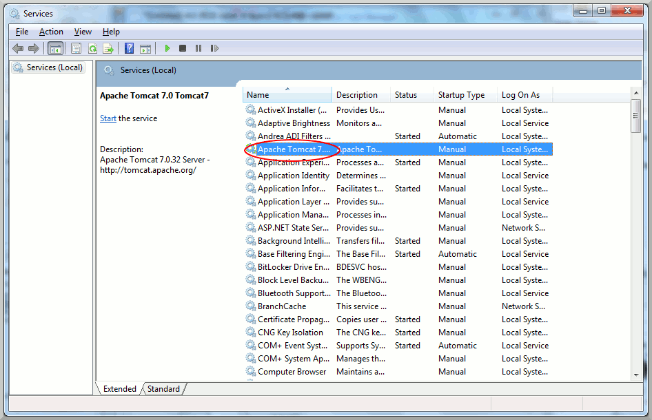
- Go to "Logon" tab, "Local System account", do NOT check "Allow service to interact with desktop".
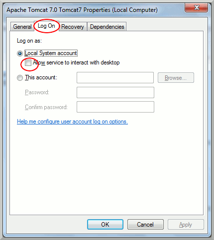
- Go to the "General" tab and click "Start" the service.
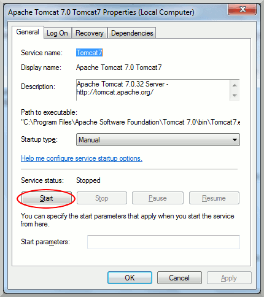
- In your browser, navigate to http://localhost:8080/repository If you see the following screen, you have successfully installed RAMADDA.
You are now ready to to set up the admin account in RAMADDA.